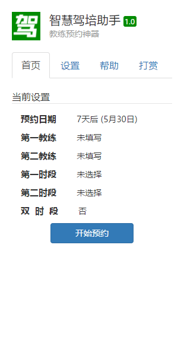
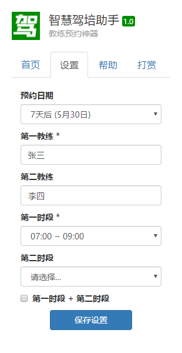
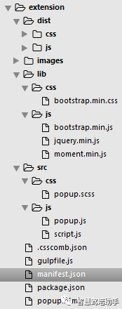
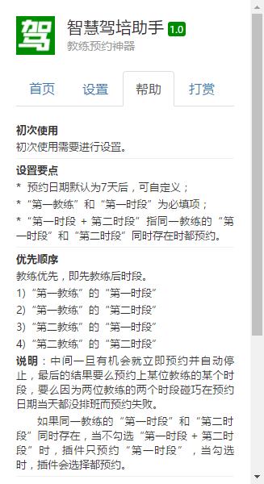

最近在驾校学习，采用的是一种叫做『智慧驾培』的教学模式——学员可以在网站（苏州智慧驾培管理系统）上预约教练，然后一对一练车。预约的时候，可以选择不同教练、不同时段，但要想预约到合适的教练和时段，就需要『抢』了。于是我想，如果有一个类似于抢火车票插件的东西来辅助预约，肯定事半功倍——这就是开发『智慧驾培助手』的初衷。
Chrome扩展
首先，在本地『抢』是比较容易的，早期的抢火车票插件也是这个思路，所以做成浏览器扩展的形式再好不过了——在前端操作，方便快捷。
浏览器扩展，有Chrome的、Firefox的，甚至Edge的，等等。考虑到通用程度，Chrome扩展无疑是最方便的。由于内核相同的缘故，Chrome扩展不作任何改动即可适配一排国产浏览器——360极速浏览器、猎豹浏览器、搜狗浏览器、QQ浏览器、百度浏览器…
Chrome扩展的开发文档，推荐360极速浏览器扩展开发文档和百度浏览器扩展开发文档，这两个可以认为是官方文档的中文版，经过他们整理后，也比官方文档更好理解。当然，追求最新、最权威的解释，还得去找官方的。
如果有些前端基础，Chrome扩展上手是很快的，毕竟它本质上来说就是Web页面。
系统预约页面
系统预约页面如上图，横排为教练，纵列为时段。每天20:00，系统会放出7天后的教练排班信息。如果某位教练的某个时段有排班，那对应位置就会出现一个绿色的块，点击，确认，即可完成预约过程。
需要说明的是，一个白色格子代表一个小时，但是练一次车一般是两个小时，所以一个绿色的块一般会覆盖两个白色格子。
智慧驾培助手
最后写出来是这样的：


在设置页面，设置好预约日期、教练和时段，然后在首页就可以开始预约了。
点击『开始预约』按钮后，插件会自动刷新和监测预约日期当天的教练排班信息。新的教练排班信息放出后，插件会立即响应，自动完成预约过程并通知提醒，然后自动停止。当然，如果设置的教练和时段，与系统中的教练排班信息没有匹配的，插件也会提醒预约失败。
技术细节
完整的项目结构见下图：

项目采用了Gulp作为前端构建工具，gulpfile.js里有两个关键任务，分别对应SCSS文件和JavaScript文件的处理。
// Styles |
Gulp引入到项目中，很多操作都可以自动化了，开发效率大大提高。
项目也引入了jQuery和Bootstrap，在写CSS样式和DOM操作逻辑的时候省心不少。
在插件设置页面，预约日期选项会贴心地提醒用户几天后是几月几日，这是借助Moment.js来实现的；教练名字输入后也会进行校验，除了字符长度合适，还得是中文（少数民族和外国人就不考虑了）。
// popup.js |
中文校验通过Unicode编码来实现，虽然比较粗糙，但区分中文和英文还是完全可以的。
关于第一教练、第二教练、第一时段和第二时段，中间也有一些逻辑，见下图：

设置完成后，通过Chrome存储相关的API将数据保存在本地，比如保存预约日期：
// popup.js |
同时，首页也更新了，显示的是设置之后的信息。
点击『开始预约』按钮后，插件会在特定页面执行相应的脚本。
特定页面是哪些页面？manifest.json里有相应的限制：
{ |
执行什么脚本？popup.js里有相应的逻辑：
chrome.tabs.executeScript(null, { file: 'lib/js/jquery.min.js' }, function() { |
jQuery就不说了，$用起来实在方便。script.js是自己写的，负责系统预约页面的刷新、监测以及预约操作。
具体的逻辑就不细说了，主要涉及DOM的查询、修改和点击事件的模拟等。
预约结果的提醒通过Chrome桌面通知相关的API来实现。
// popup.js |
Chrome扩展『智慧驾培助手』的代码已经在GitHub上开源了——点此前往，欢迎学习交流。